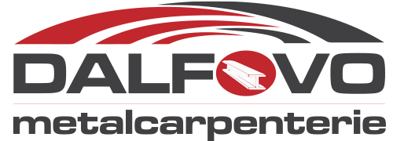
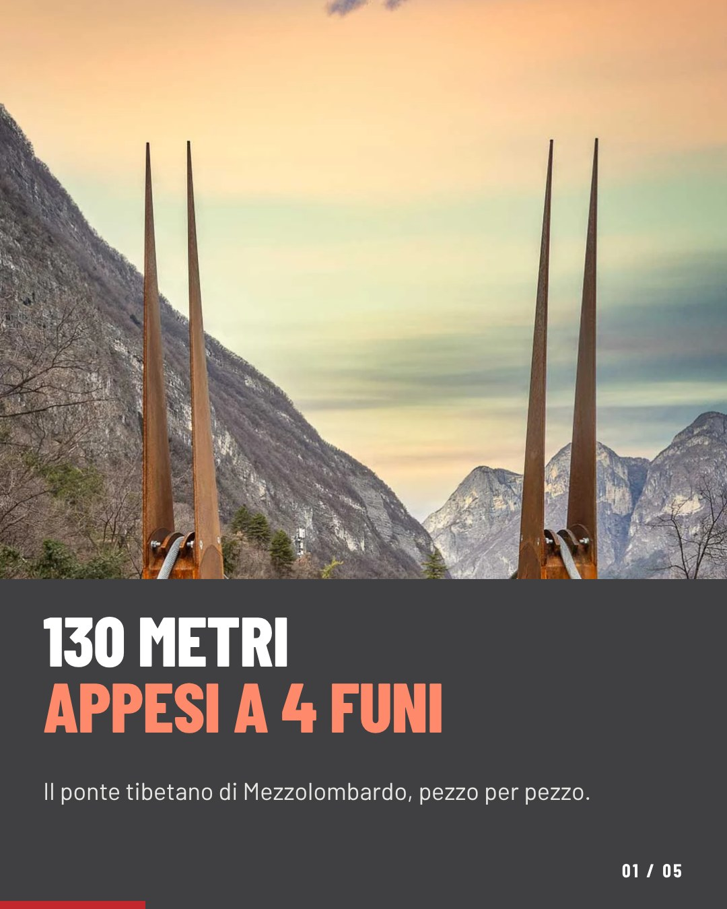
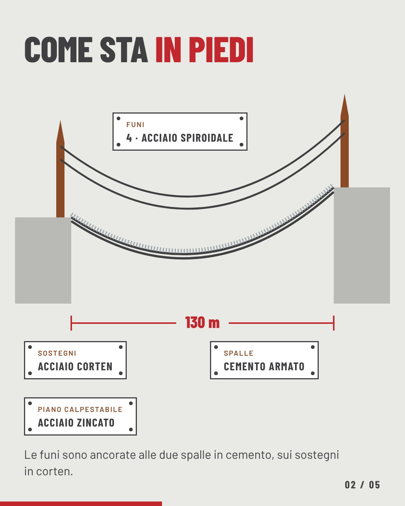
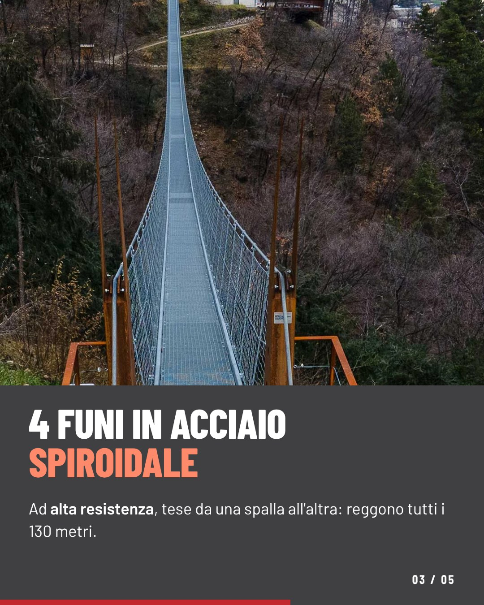
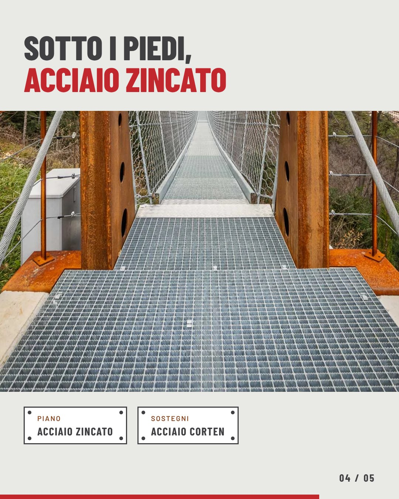
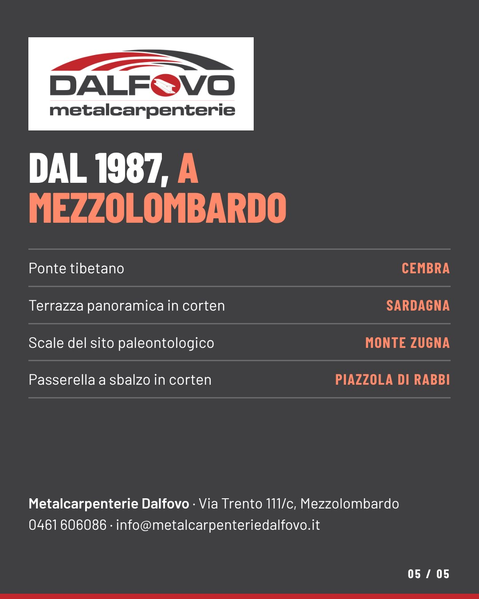

metalcarpenterie1 / 5




Scorri col dito o tocca le frecce
metalcarpenterie 130 metri appesi a 4 funi. Il ponte tibetano di Mezzolombardo: 4 funi in acciaio spiroidale ad alta resistenza, ancorate alle spalle in cemento armato con i sostegni in acciaio corten, e un piano calpestabile in acciaio zincato. Realizzato da Metalcarpenterie Dalfovo, a Mezzolombardo dal 1987. #mezzolombardo #pontetibetano #carpenteriametallica #corten #trentino